Museum of Possibility Management on Strikingly
[
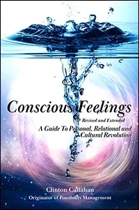
](https://forms.gle/JMnUbzhuLK1hrwiP6)
Conscious Feelings: a guide to personal, relational, and cultural revolution
From Clinton Callahan, 2025.
Emotions are for healing things. Feelings are for creating.
Your feelings might be about someone else, but they are for you.
Feelings aren’t problems. They are pathways. With this guidebook you can confidently explore your inner world.
For too long, modern culture has taught us to suppress, ignore, or fear our feelings - cutting us off from the intelligence, clarity, and power they provide. In Conscious Feelings, Clinton Callahan cracks the code of our emotional lives and reveals how feelings are not obstacles to avoid, but allies to embrace - doorways to authentic adulthood, radiant love, and regenerative culture.
Part handbook, part field guide, part revolutionary manifesto, this book equips you with tools, distinctions, and experiments to transform feelings into conscious forces of creation. Drawing from decades of Possibility Management practice, it guides you to navigate your inner landscape, heal old wounds, take radical responsibility for your life, and show up for yourself, your relationships, and the world.
The most powerful thing you can do for the world right now is consciously feel. The rest unfolds from that.
[
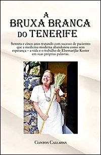
](https://forms.gle/JMnUbzhuLK1hrwiP6)
Bruxa Branca do Tenerife
(White Witch of Tenerife in Portuguese)
Por Clinton Callahan, 2023. Traduzido do Inglês 2025 por: Juliana Martins 2025. Setenta e cinco anos tratando com sucesso de pacientes que a medicina moderna abandonou como sem esperança – a vida e o trabalho de Elsemarijke Koster em suas próprias palavras.
Elsemarijke Koster é uma terapeuta alternativa que aplica com sucesso sua modalidade única de cura, após todos seus estudos de quiropraxia, reflexologia, medicina Chinesa, medicina Indígena Americana, acupuntura, acupressão, Ayurveda, medicina Tibetana, bioenergética, gestalt, renascimento, R. D. Laing, técnica de Alexander, Gurdjieff, antroposofia, reiki e assim por diante. Os efeitos holísticos físicos e espirituais de seus tratamentos em indivídu@s em que a medicina moderna rejeitou como não tendo esperança, são nada menos que milagrosos. Ainda mais tocantes são os contos de Elsemarijke sobre seus riscos e aventuras para se tornar o que ela precisava se tornar para entregar sua linhagem de cura arquetípica.
“Ouvir Elsemarijke falar é assustador e curativo ao mesmo tempo. Assustador, quando ela explica os perigos de escolher ‘lixos do ego em vez de iluminação'. Curativo, quando ela conta as diversas histórias sobre as recompensas, as aventuras, e as possibilidades que surgem quando você se liberta e se abre para servir. Suas histórias me fazem entender melhor quais são os potenciais e aventuras infinitas para o espírito humano.”
Johannes Rölkes, após transcrever conversas gravadas.
[
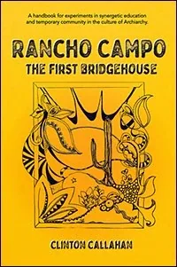
](https://forms.gle/JMnUbzhuLK1hrwiP6)
Rancho Campo: the first Bridgehouse
by Clinton Callahan, 2025, with Alan Friedman, Ed Clark, Kat Felkner, and Phyllis Goldman. Waiting around for things to get better grows boring. But trying to exit modern culture without upgrading your Standard Human Intelligence Thoughtware (S.H.I.T.) is like trying to swim the English Channel wearing your three piece suit and your pockets full of gold coins. In 1975, five intrepid edgeworkers packed up a half-ton Toyota pickup and an old four-door Chevy, drove 1,358 kilometers to an uninhabited beach at the southernmost tip of Baja California, Mexico, and set up their own private Free School, the first Bridgehouse! Rancho Campo is an instruction handbook plus adventure story, inspiring you to create for yourself something truly exotic to unleash your deep potentials.
[
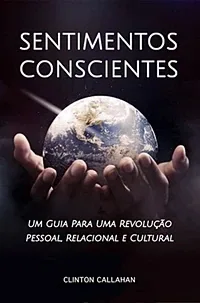
](https://forms.gle/JMnUbzhuLK1hrwiP6)
Sentimentos Conscientes
(Conscious Feelings in Portuguese)
Por Clinton Callahan, 2022. Traduzido do Inglês 2025 por: Joana Ribeiro, Joana Cruz, Vera Luísa Franco, Juliana Martins, Isadora Galant e Luís Miguel Trindade.
Edição: Luís Miguel Trindade, Danielle Barros e Sónia Gonçalves.
As ideias da cultura moderna sobre sentimentos são tão distorcidas que equiparamos sentir-se bem a não sentir nada. Na verdade, não queremos nos sentir felizes. Queremos nos sentir entorpecidos. As atuais crises globais e o fracasso geral de humanos aparentemente inteligentes em criar um futuro viável para si mesmos refletem uma profunda desconexão de nossos próprios sentimentos. A idealização do herói forte e sem emoções pode exterminar a raça humana. O livro pega o leitor pela mão e diz: A escolha pessoal de não ter emoções pode ter sido feita inconscientemente. Mas neste momento você pode mudar de ideia e aprender a sentir conscientemente. E então ele mostra passo a passo como. Esta tradução é da edição revisada e expandida de 2020 com distinções adicionais e mapas de pensamento atualizados. Os experimentos receberam Códigos de Matriz para StartOver.xyz. Novas seções foram adicionadas sobre White Widow, o Quinto Corpo, Transformação Gremlin, Descontaminações do Estado do Ego Adulto e Relacionamento Radical. Este livro é revolucionário! Pense onde você pode deixar uma cópia de Sentimentos Conscientes em um Café favorito onde as pessoas vêm para se refrescar com novas perspectivas. Pense em quais "líderes de pensamento" não têm o software de pensamento Archan - e se você os enviasse a eles? Considere realizar um Grupo de Estudo para ler Sentimentos Conscientes junto com seus amigos. Tente se lembrar de quando você aprendeu pela primeira vez que há uma diferença entre Sentimentos e Emoções, o quanto isso mudou sua vida. Pense em seus primeiros Experimentos de Sentimentos de baixo nível e como é emocionante descobrir que você pode diminuir sua Barra de Dormência e começar a usar a inteligência prática e a energia dos Sentimentos de Baixo Nível. Quantos dos seus amigos e colegas ainda não têm essa Clareza em suas vidas e relacionamentos diários? Cada livro que você coloca lá fora é um Bilhete Dourado para um novo mundo!
[
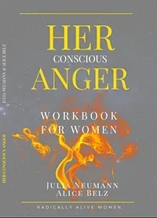
](https://www.radicallyalivewomen.com/shop/)
Her Conscious Anger : workbook for women
By Julia Neumann and Alice Belz, 2024.
From the first spark of inspiration to the final sentence, this book represents not just the passion of its authors, but also a shared journey of discovery offered to its readers.
Imagine a world where you are the source of the culture you want to live in.
This Workbook is for every woman who wants to unleash her potential and reclaim her Anger to transform its energy and information so that: She has her center, her voice, knows what she wants, and vibrantly thrives.
In a world hungry for authentic connection, our true power lies in our ability to uplift and inspire, standing fiercely beside our sisters, leaving competition behind and uniting in collaboration.
Julia’s clarity and eloquence breathe life into a topic that is often hard to talk about. Alice’s real-life examples and vivid writing blow life into the distinctions.
Step by step, Her Conscious Anger offers exercises and practices for new experience.
All these ingredients make this book a delightful read, inviting you to uncover the treasure that Her Conscious Anger actually leads to...
[
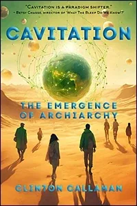
](https://forms.gle/JMnUbzhuLK1hrwiP6)
Cavitation: the emergence of Archiarchy
(the first Archan novel...)
by Clinton Callahan, 2024.
I cradle Cavitation in my arms. My eyes brim over with tears. I’ve been longing to read this book my whole life. I so wanted to collaborate with the likes of people whose stories are told in these pages. I thought I would need to write this book myself if I wanted the thoughtmaps to exist. But here they are! Now I can hardly contain my impatience to meet anyone else who has read Cavitation so we can get on with creating Archiarchy together.
Each time I put Cavitation down, I long to hold it in my hands again. The pages are transparent doorways leading to precious, ancient, transformational chambers from an infinite labyrinth. Each story is a download of practical wisdom, woven into a novel of realistic loving discoveries. I don't want the book to be over too soon, but I can’t resist reading further. I keep wanting to find out what becomes of me when I continue on this journey. This book is a celebration!
Cavitation tells the kind of stories that pull the rug out from under your belief system and drop you into a new reality by giving you models not bound by the limitations of your current worldview. This is a book of doorways to seemingly impossible worlds. But when you go through a doorway, the new world is no longer impossible, because the book gives you the tools to bring it to life yourself.
[
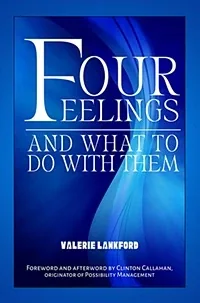
](https://forms.gle/JMnUbzhuLK1hrwiP6)
Four Feelings and What To Do With Them: origins of regenerative human culture
by Valerie Lankford, 1981, re-released by Thoughtware Press 2024, with Foreword and Afterword by Clinton Callahan.
When Four Feelings And What To Do With Them was first published in 1981, the idea that your feelings could be good for something was revolutionary. The funny thing about that concept is, it is still revolutionary today! Through practical guidelines taken from every-day real-life situations, Valerie Lankford unfolds a powerful inner roadmap for you. Knowing what you feel indicates your true ‘X’ on the map. From there you can say what you need, and also listen to the feelings of others without being overwhelmed. This book transforms a ‘disturbing handicap’ into a relational superpower. You discover through down-to-earth no-nonsense instructions how your four universal feelings can help you to solve problems and to feel better.
This book includes Valerie Lankford’s ground-breaking Four Feelings pamphlet, plus seven empowering articles from Lankford’s decades of experience as a Licensed Clinical Professional Counselor (L.C.P.C.), and a Clinical Teaching Member of the International Transactional Analysis Association. In a startling Foreword and an extensive Afterword, Clinton Callahan – originator of Possibility Management – reveals how Valerie Lankford’s Thoughtmap of Four Feelings is nothing less than the seed crystal that is catalyzing regenerative human cultures on Earth.
[
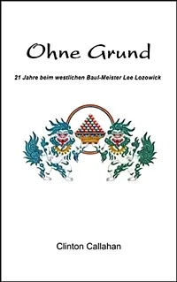
](https://forms.gle/JMnUbzhuLK1hrwiP6)
Ohne Grund: 21 Jahre bei Western Baul-Meister Lee Lozowick
von Clinton Callahan, 2022. Übersetzt ins Deutsche von Sophia Wegele, 2024.
Wahre Geschichten über Clintons einundzwanzigjährige Ausbildung beim archetypischen Magier Lee Lozowick. Hier sind Lehren, die auf der Straße gelernt wurden, während Lee Lozowick einen unmittelbaren alchemistischen Prozess liefert. Zusätzlich zu Clintons Artikeln, die in der Zeitschrift „Tawagoto“ der Hohm Community veröffentlicht wurden, und den Hohm Sahaj Mandir Study Manuals III und IV enthält No Reason nie zuvor geteilte Unterscheidungen, flüssige Zustände, privates Feedback und Coaching, herzzerreißende Einsichten, unglaubliche Möglichkeiten, peinliche Fehler und verblüffende Durchbrüche. Dieses Buch ist eine Schatztruhe hart erkämpfter und niemals zu vergessender evolutionärer Juwelen ... der Ausbildung eines Possibilitators. Ein Leser schrieb: „Endlich ist No Reason angekommen. Ich sitze hier in Tränen aufgelöst und bin so berührt und verbunden von Ihren Worten über Ihre Liebe zu Lee!!! Als ich in seinem Ashram war, schaute ich in einige seiner Bücher und genau das Gleiche passierte. Ich lese und spüre seine Liebe zu seinem Meister. Clinton, ich liebe dich so sehr für diese Liebe. Das ist, wo ich herkomme, was ich bin und was ich sein möchte. Das ist meine Sprache, mein Zuhause! Das ist Der Treffpunkt, mein Haken, mein Schmerz, meine Freude! Ich danke dir so sehr für deine Arbeit und Liebe!“
[
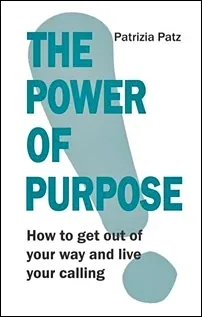
](https://www.amazon.de/-/en/Patrizia-Patz/dp/3746044820/)
The Power Of Purpose: How to get out of your way and live your calling
by Patrizia Patz, 2023. We have been conditioned in a society where work primarily ensures survival and grants status. Vocation is not really an aspect worth thinking about in the current world of work. And even when we have clarity about what we burn for, what we really want to do, most people seeking their calling remain in the established model. Why do we so freely trade freedom and fulfilment for apparent security? Why have we lost our courage? Patrizia Patz's book provides answers. It explores the feasibility between desire and reality, provides attractive possibilities to get on the track of our passions and talents and to realise a good life - with a job that also pays the bills. For this to succeed, we need a new way of thinking and a little courage to leave the pre-drawn mainstream career path and expand our own comfort zone. The first steps are simple: get clear about what you like to do and what you are passionate about. Free yourself from expectations that you should live up to. Take courage and trust in the path.
[
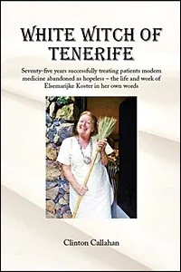
](https://forms.gle/JMnUbzhuLK1hrwiP6)
White Witch of Tenerife: Seventy-five years successfully treating patients modern medicine abandonned as hopeless - the life and work of Elsemarijke Koster in her own words
by Clinton Callahan, 2023. There are rare individuals - certain shining stars - who, by birth or by revelation, escape those fiercely-enforced social restrictions about what a human being can become. They establish a private relationship with the Universe. A few of these eccentrics dedicate their lives to helping whoever knocks on their door to experience less pain and more opportunities. One such 'angel' is Elsemarijke Koster, born during a German air-raid attack on Amsterdam in 1943. Nearly unknown, except in those circles where her potent blessings have caused ripples of impossible healings, Elsemarijke leads a life of unlikely coincidences and challenges, each building one-upon-the-next to culminate in her discoveries about healing and human potentials. This book tells Elsemarijke's personal tales, documented by Clinton Callahan during a month-long interview in 2013. Anyone in the healing, transformation, or medical professions may find this volume deeply inspiring and exceptionally useful. Already we are receiving feedback about the book:
"I just finished reading, ‘White Witch of Tenerife’… perhaps the MOST INSPIRING read ever in my lifetime! It is incredibly well written in credit to Clinton! I am THOROUGHLY INSPIRED:
* to be a more humble person
* to be a more aware and conscious being
* to be much more a ‘giver’ vs. ‘taker’ in my life
* to continue to GROW on my PATH
* to MORE TRULY APPRECIATE the diverse and equally IMPORTANT 'paths’ of others
* to be MORE INTERNALIZED in my way of being and doing things…..
and a whole list more.
I THANK the UNIVERSE for this precious treasure!"
This book is only available privately. White Witch of Tenerife is also available in Portuguese as Bruxa Branca do Tenerife.
[
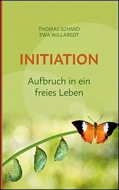
](http://nextculturepress.org/501.html?&L=0)
Initiation: Aubfruch in ein freies Leben
von Thomas Schmid und Ewa Willaredt, 2022. Ein freies Leben führen wollen viele. Doch kaum jemand weiß, wie es geht. Die meisten schleppen seelischen Ballast mit sich herum, ungelöste Konflikte und frühe Prägungen verstellen den Weg ins Freie. Ewa Willaredt und Thomas Schmid - erfahrene Trainer und Coaches - zeigen, wie wichtig der bewusste Schritt ins Erwachsensein ist: Unfreiheit und Unzufriedenheit rühren auch daher, dass Menschen keinerlei Initiation durchleben und deshalb nicht wirklich erwachsen werden. Idealer Zeitraum für eine solche Initiation ist das Jugendalter. Doch auch Erwachsene haben jederzeit die Möglichkeit, initiierte Erwachsene zu werden - mit der Vergangenheit Frieden zu machen, die volle Verantwortung für sich und andere zu übernehmen. Es ist nie zu spät! Im Buch werden zahlreiche Techniken vermittelt, wie diese Metamorphose zu einem freien Individuum gelingen kann. Lebensnah, lebensfreundlich, lebensecht. Ein Wagnis? Ja. Aber eines, das sich lohnt.
[
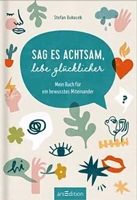
](http://thoughtwarepress.org/)
Sag es achtsam, lebe glücklicher: Mein Buch für ein bewusstes Miteinander | Wertvolle Tipps für achtsame Kommunikation
Von Stefan Bukacek 2022. Hilfreiche Tipps, Tricks und Methoden auf, wie man die eigenen Gefühle und Bedürfnisse besser erkennt, einordnet und ausdrückt. Und gibt gleichzeitig Skills mit, wie man mit den emotionalen Reaktionen des Gegenübers achtsam umgehen lernt. So gelingt es, sich auf persönliche Bedürfnisse zu fokussieren und seinen Wünschen, Träumen und Zielen – also dem Glück – ein großes Stück näherzukommen.
Ob in der Partnerschaft und in der Familie oder im Job und im ganz normalen Alltag – dieses Buch kann dir dabei helfen, dich und deine Mitmenschen besser zu verstehen und einen besseren, achtsameren und glücklicheren Umgang miteinander zu finden.
Stefan Bukacek ist Sachbuchautor und Trainer für gewaltfreie Kommunikation und arbeitet zudem als Unternehmensberater für Tech-Unternehmen.
[
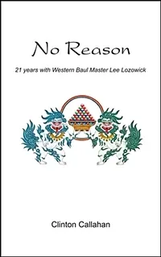
](https://forms.gle/JMnUbzhuLK1hrwiP6)
No Reason: 21 years with Western Baul Master Lee Lozowick
By Clinton Callahan 2022. True stories of Clinton's twenty-one year apprenticeship with the archetypal mage, Lee Lozowick. Here are teachings learned in the streets while Lee Lozowick delivers immediate alchemical process. In addition to Clinton's articles published in the Hohm Community's periodical 'Tawagoto', and the Hohm Sahaj Mandir Study Manuals III and IV, No Reason includes never-before-shared distinctions, liquid states, private feedback and coaching, heartbreaking insights, incredible opportunities, embarrassing blunders, and startling breakthroughs. This book is a treasure-chest of hard-earned and never-to-be-forgotten evolutionary jewels... the training of a Possibilitator. One reader wrote: "Finally No Reason arrived. I sit here in tears being so touched and connected by your words about your love to Lee!!! When I was at his ashram, I looked into some of his books and the very same happened to me reading and sensing his love for his master. Clinton I love you so much for this love. This is where I come from, what I am, and what I want to be in. This is my language, my home! This is the meeting point, my hook, my pain, my joy! I so much thank you for your work and love!"
[
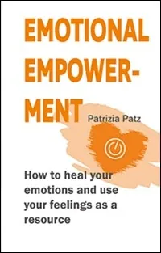
](http://how%20to%20heal%20your%20emotions%20and%20use%20your%20feelings%20as%20a%20resource%20Forget%20everything%20you%20think%20you%20know%20about%20feelings!%20Because%20our%20culture,%20which%20is%20so%20rational%20and%20mind-oriented,%20wants%20us%20to%20believe%20that%20feelings%20are%20unprofessional%20and%20negative.%20To%20develop%20emotional%20strength,%20we%20need%20a%20different%20attitude%20towards%20feelings.%20%20Feelings%20are%20not%20a%20design%20flaw%20of%20creation!%20They%20are%20a%20useful%20source%20of%20power%20and%20navigation%20system%20in%20one.%20On%20the%20other%20hand,%20they%20can%20also%20be%20tools%20for%20manipulation.%20But%20without%20awareness%20of%20them,%20we%20have%20no%20choice.%20Only%20when%20we%20are%20aware%20of%20our%20feelings%20do%20we%20gain%20clarity%20and%20are%20able%20to%20take%20responsibility%20for%20our%20own%20lives%E2%80%A6.)
Emotional Empowerment: How to heal your emotions and use your feelings as a resource
By Patrizia Patz, 2022. Feelings are not a disease! They are a source of power and a navigation system in one.
How to heal your emotions and use your feelings as a resource.
Forget everything you think you know about feelings! Because our culture, which is so rational and mind-oriented, wants us to believe that feelings are unprofessional and negative. To develop emotional strength, we need a different attitude towards feelings.
Feelings are not a design flaw of creation! They are a useful source of power and navigation system in one. On the other hand, they can also be tools for manipulation. But without awareness of them, we have no choice. Only when we are aware of our feelings do we gain clarity and are able to take responsibility for our own lives….
[
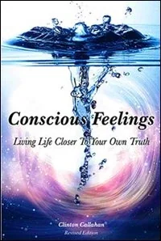
](https://forms.gle/JMnUbzhuLK1hrwiP6)
Conscious Feelings: Living life closer to your own truth
by Clinton Callahan, 2022. The English version of Directing The Power Of Conscious Feelings is sold out. A newly Revised and Expanded edition with the title Conscious Feelings is available from Hohm Press with additional distinctions and updated thoughtmaps. The experiments have been given Matrix Codes for StartOver.xyz. New sections have been added regarding White Widow, the Fifth Body, Gremlin Transformation, Decontaminations of the Adult Ego State, and Radical Relating. We have learned so much through delivering Trainings, WorkTalks, and Possibility Coaching in the missing 12 years. Now we have a chance to share it with you!
Conscious Feelings is a treasure-chest full of Thoughtware for Archiarchy. Think of how many people might enjoy this wealth of new ideas for a Christmas present! Think of where you can leave a copy of Conscious Feelings at a favorite Café where people come to refresh themselves with new perspectives. Think of which ‘thought leaders’ lack Archan thoughtware – what if you sent it to them? Consider holding a Study Group to read Conscious Feelings together with your friends. Try to remember when you first learned that there is a difference between Feelings and Emotions, how much that changed your life. Think back on your first low-level Feelings Experiments and how exciting it is to discover that you can lower your Numbness Bar and start using the practical intelligence and energy of Low-Level Feelings. How many of your friends and colleagues are still without this Clarity in their daily lives and relationships? Each book you place out there is a Golden Ticket to a new world!
Now published by Thoughtware Press. Also available from Bookstore.org. Conscious Feelings is currently being translated into Portuguese, Spanish, and Polish.
[
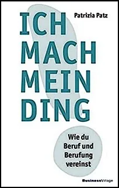
](http://nextculturepress.org/501.html?&L=0)
Ich Mach Mein Ding: Wie du Beruf und Berufung vereinst
von Patrizia Patz, 2021. In dem Buch geht es in erster Linie nicht darum, wie man seine Berufung findet, sondern wie man Verantwortung dafür übernimmt, das in die Welt zu bringen, was einem wichtig ist und wofür man brennt.
Ich beschreibe im Buch die 14 typischen Hürden, die uns in der Regel davon abhalten, unsere Berufung in Aktion zu sein. Und natürlich, wie man diese Hürden überwindet. Und da kommen natürlich die ganzen wundervollen Unterscheidungen und Werkzeuge von Possibility Management ins Spiel.
[
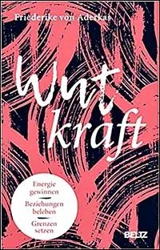
](https://www.friederikevonaderkas.com/wutkraft---das-buch.html)
Wut kraft: Energie gewinnen, Beziehungen beleben, Grenzen setzen
von Friederike von Aderkas, 2021 mit Sylvia Gredig. 'Wut kraft' Seit Kindertagen haben wir gelernt, Wut zu unterdrücken, gilt sie doch als Zeichen der Zerstörung. Das ist fatal, denn Wut ist ein Gradmesser für unser Wohlbefinden. Wer ihr nicht zuhört, läuft Gefahr, den Zugang zu den eigenen Bedürfnissen zu verlieren, krank zu werden und eine Depression zu entwickeln.
Wutkraft ist eine Einladung, unsere eigene Wut kennenzulernen und verantwortlich damit zu leben. Sie weist uns den Weg zu mehr Präsenz, Lebendigkeit und Wohlgefühl. Anhand von zahlreichen Übungen und Reflexionen zeigt Friederike von Aderkas, wie wir unsere Wut positiv nutzen: Wie wir lernen, Grenzen zu setzen, Entscheidungen mit neuer Klarheit zu treffen und Beziehungen neu zu gestalten.
Schritt für Schritt enthüllt Friederike Geheimnisse und Fähigkeiten, die sie zusammen mit Jelka Mönch gelernt hat, und liefert Rage Club - und emotionale Heilungsprozesse aus dem Possibility Management.
[
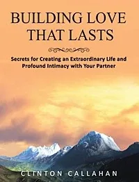
](https://forms.gle/JMnUbzhuLK1hrwiP6)
Building Love That Lasts: Secrets for creating an extraordinary life and profound intimacy with your partner
By Clinton Callahan 2020. This is a reprint of Radiant Joy Brilliant Love with a new title, ISBN number, cover, updated weblinks, and Matrix Codes for each Experiment so that you you can record your Matrix Points at StartOver.xyz. This hard-hitting and innovative book about partnered relationship immediately challenges the deceptions about love and intimacy rampant in today's patriarchal culture. At the same time, Building Love That Lasts reveals a step-by-step process for discovering and living out alternative possibilities. The author claims that even the best of our relationships are still generally basic level; what he calls 'Ordinary Human Relationship'. He asserts that two more domains remain to be explored: namely, Extraordinary Human Relationship and Archetypal Love. The book describes exactly how to enter these new domains, and how to stay there long enough to cultivate genuine intimacy, nurturance, excitement and satisfaction together. The material for this book is startlingly original and fresh, directly distilled from over thirty years of trial, error and re-evaluation within small private circles and trainings conducted by the author in the U.S., Europe, and South America.
The essential teaching tools are 'Thoughtmaps' that illustrate and guide the dynamics of evolving relationship, coupled with a series of exploratory experiments to be undertaken alone or with one's partner. Topics include: Making the leap from 'Defensive Learning' to 'Expansive Learning'. Breaking out of the relationship 'Box'. The lie of being unlovable. Navigating in the realm of conscious feelings. And communication skills for 'explorers'.
[
](https://forms.gle/JMnUbzhuLK1hrwiP6)
Wahre Liebe im Alltag: Das Erschaffen authentischer Beziehungen
von Clinton Callahan, Neuauflage 2020 mit neuem gebundenes Cover. Übersetzt ins Deutsche von Marion Lutz. Das Buch richtet sich an alle Männer und Frauen, die in einer Beziehung leben oder leben wollen. Es hilft, die eigenen Strukturen in Bezug auf Beziehungen, Sex, Zärtlichkeit, Konflikte zu erkennen – und zu ändern!
Dieses Buches befähigt Sie zu einem Leben in persönlicher Verantwortung und Konsequenz. Der Autor behauptet, dass selbst die „besten” unserer Beziehungen bloß „Gewöhnliche Menschliche Beziehungen” sind. Er unterscheidet zwei weitere Domänen, die unserer Erkundung offen stehen, und zwar Außergewöhnliche Menschliche Beziehung und Archetypische Beziehung. Das Buch zeigt genauestens auf, wie Sie diese neuen Domänen gemeinsam betreten und sich dort lange genug aufhalten können, um echte Vertrautheit, Leidenschaft und Zufriedenheit zu kultivieren. Die essentiellen Lehrwerkzeuge sind „mentale Landkarten“, welche die Dynamik sich entwickelnder Beziehungen illustrieren und formen. Daran gekoppelt ist eine Reihe von „Experimenten“, die alleine oder mit dem Partner unternommen werden können.
[
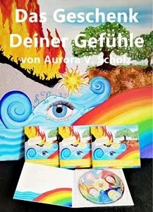
](http://nextculturepress.org/501.html?&L=0)
Das Geschenk Deiner Gefühle
CD von Aurora V. Scholz, 2020. Deine Gefühle dürfen sein! Sie sind von Grund auf dienlich und notwendig, um weiter zu kommen. Auf dieser Reise begegnen Dir vier Grundgefühle,
um einfach und tiefgründig darüber aufzuklären, wie sie von Natur aus gedacht sind.
Deine Gefühle voller Ressourcen:
Erfahre, wie Traurigkeit Dich im inneren Wandel unterstützt.
Erkenne, wie Wut Dich weiter bringen kann.
Und lausche der Angst, wenn sie erzählt, dass sie nicht dazu gedacht ist, Dich zu lähmen.
Sie wird Dir ihr ureigenes Geheimnis offenbaren. Sinn dieser Reise ist es, die unendlich großen Geschenke, die unsere Gefühle (ALLE!) für uns bereit halten, zu entdecken.
[
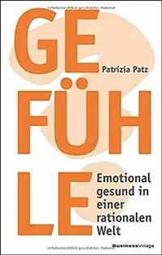
](https://emotional-empowerment.de/)
Gefühle: Emotional gesund in einer rationalen Welt
von Patrizia Patz, 2019. Emotionen oder auch Gefühle sind ein geflügeltes Wort und aus unserem Sprachgebrauch kaum wegzudenken. Mal soll man sie zeigen, mal soll man sie verbergen – also Gefühlskontrolle betreiben. Doch nüchtern betrachtet sind wir emotionale Analphabeten. So richtig wissen wir mit Gefühlen nichts anzufangen.
Warum haben wir den Umgang mit Emotionen verlernt? Oder haben wir ihn nie gelernt?
Die ersten Schritte sind dabei ganz einfach: Die eigenen Gefühle wieder wahrnehmen, kritisch hinterfragen und einordnen und die darin enthaltene Kraft nutzen, um nachhaltige Veränderungen zu vollziehen.
[
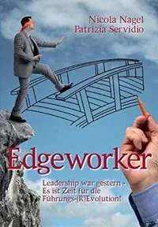
](https://www.amazon.de/Edgeworker-Leadership-gestern-F%C3%BChrungs-Evolution/dp/3981454367/)
Edgeworker: Leadership war gestern
von Nicola Nagel (Neumann-Mangoldt) und Patrizia Servidio (Patz), 2015. Es ist nicht mehr zu leugnen: Ein Richtungswechsel in Unternehmen ist dringend notwendig. Die klassische, hierarchische und auf Profit fokussierte Unternehmensführung entpuppt sich mehr und mehr als selbstmörderisches Paradigma. Doch wie kann ein Richtungswechsel gelingen? Er beginnt mit einer neuen Generation von Menschen, die das Risiko eingehen, Unternehmen komplett neu zu gestalten und einen Paradigmenwechsel vorzunehmen, sogenannte Edgeworker. Das Buch regt zu radikal neuem Denken in Bezug auf Führung an. Es beschreibt anhand zahlreicher Unterscheidungen und Beispiele die Kernfertigkeiten der Edgeworker, die über das bisher bekannte „Leadership“ weit hinausgehen.
[
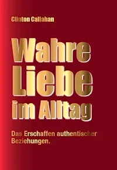
](https://forms.gle/JMnUbzhuLK1hrwiP6)
Wahre Liebe im Alltag (ausverkauft)
von Clinton Callahan, neue Ausgabe, überarbeitet und aktualisiert 2015. Übersetzt ins Deutsche von Marion Lutz. Das Buch richtet sich an alle Männer und Frauen, die in einer Beziehung leben oder leben wollen. Es hilft, die eigenen Strukturen in Bezug auf Beziehungen, Sex, Zärtlichkeit, Konflikte zu erkennen – und zu ändern!
Dieses Buches befähigt Sie zu einem Leben in persönlicher Verantwortung und Konsequenz. Der Autor behauptet, dass selbst die „besten” unserer Beziehungen bloß „Gewöhnliche Menschliche Beziehungen” sind. Er unterscheidet zwei weitere Domänen, die unserer Erkundung offen stehen, und zwar Außergewöhnliche Menschliche Beziehung und Archetypische Beziehung. Das Buch zeigt genauestens auf, wie Sie diese neuen Domänen gemeinsam betreten und sich dort lange genug aufhalten können, um echte Vertrautheit, Leidenschaft und Zufriedenheit zu kultivieren. Die essentiellen Lehrwerkzeuge sind „mentale Landkarten“, welche die Dynamik sich entwickelnder Beziehungen illustrieren und formen. Daran gekoppelt ist eine Reihe von „Experimenten“, die alleine oder mit dem Partner unternommen werden können.
[
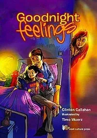
](http://thoughtwarepress.mystrikingly.com/)
Goodnight Feelings
by Clinton Callahan, illustrated by Timo Wuerz, 2014. The book that makes your day just a little bit better… whatever kind of day it was. Good Night Feelings invites little ones and big ones to round out their day together during picture-enhanced heart-to-heart sharing.
Any sad moments, strong or subtle frustrations, spurts of fear, and ripples of joy – all are completed and washed away during this safely guided respectful exchange.
Each feeling has a right to exist. When you listen carefully to your own feelings and the feelings of your children, the feelings can explain interactions and heal wounds that logical thinking could never resolve.
Good Night Feelings could become the most exciting book on your child's shelf because each time you read it together, new stories emerge with surprising depth and freshness.
[
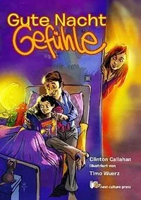
](https://forms.gle/JMnUbzhuLK1hrwiP6)
Gute Nacht Gefühle
von Clinton Callahan, veranschaulicht durch Timo Wuerz, 2014. Übersetzt ins Deutsche von Marion Lutz.
Das Buch, das deinen Tag ein kleines bisschen besser macht… egal, was es für ein Tag war.
Gute Nacht Gefühle lädt Große und Kleine dazu ein, den Tag gemeinsam ausklingen zu lassen. Mit eindrucksvollen Bildern fordert es die Herzen auf, sich gegenseitig die Gefühle des Tages mitzuteilen.
Ob es traurige Momente gab, starken oder unterschwelligen Frust, Augenblicke der Angst oder freudige Erlebnisse – während dieses schützend gelenkten und respektvollen Austausches werden sie alle vollendet und fortgespült.
Jedes Gefühl hat seine Daseinsberechtigung. Wenn Menschen ihren eigenen Gefühlen und den Gefühlen anderer sorgfältig zuhören, dann können die Gefühle Zusammenhänge erklären und Verletzungen heilen, die das logische Denken niemals lösen könnte.
Gute Nacht Gefühle könnte das spannendste Buch im Bücherregal eines Kindes werden, denn jedes Mal, wenn es gemeinsam gelesen wird, entwickeln sich die Geschichten neu, mit überraschender Tiefe und Frische.
[
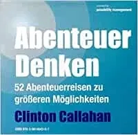
](http://nextculturepress.org/491.html?&L=9)
Abenteuer Denken Hörbuch
[
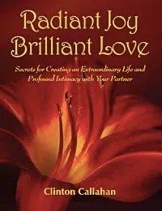
](https://bookshop.org/a/16582/9781942493549)
Radiant Joy Brilliant Love (sold out)
by Clinton Callahan, 2010. This hard-hitting and innovative book about man-woman relationship immediately challenges the deceptions about love and intimacy rampant in today's patriarchal culture. At the same time, Radiant Joy Brilliant Love reveals a step-by-step process for discovering and living out alternative possibilities. The author claims that even the best of our relationships are still generally basic level; what he calls Ordinary Human Relationship. He asserts that two more domains remain to be explored: namely, Extraordinary Human Relationship and Archetypal Love. The book shows exactly how to enter these new domains, and how to stay there long enough to cultivate genuine intimacy, nurturance, excitement and satisfaction together. The material for this book is startlingly original and fresh, directly distilled from over thirty years of trial, error and reevaluation within seminars and trainings conducted by the author in the U.S. and Europe. The essential teaching tools are Thought-Maps that illustrate and guide the dynamics of evolving relationship, coupled with a series of experiments explorations to be undertaken alone or with one's partner. Topics include: What your mother never told you and your father didn't know (about love and relationships). Making the leap from Defensive Learning to Expansive Learning. Breaking out of the relationship Box. The lie of being unlovable. Navigating in the realm of feelings. Communication skills for explorers.
[
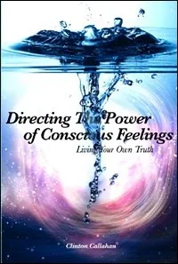
](https://bookshop.org/a/16582/9781935387114)
Directing the Power of Conscious Feelings (sold out)
by Clinton Callahan, 2010.
Book Recommendation for Xtinction Rebellion 15 January 2021
"I have been living in the empowering clarity of this book for three and a half years, now, and I can tell you it feels like an Xtinction Rebellion Handbook. Why? Because by talking over the maps with my team and trying the experiments together, we are visibly able to harness more and more of the intelligence and energy of our conscious rage, grief, fear, and joy to create real change in our own lives, and the lives of those around us. This startlingly clear handbook begins by examining 'boys with guns' and page-by-page equips you with the tools and initiations to fruitfully live in collaborative next culture. I did not realize that modern culture took me through school but left me uninitiated. I did not realize it is possible to ‘upgrade my thoughtware’ with new distinctions. This book invites you to connect with inner and outer resources that the modern capitalist patriarchal empire knows nothing about. It is an escape kit connected to a platform called StartOver.xyz with over 550 copyleft open-code websites that blow your mind with possibility. Please read this book ASAP with your Team."
[
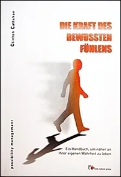
](https://forms.gle/JMnUbzhuLK1hrwiP6)
Die Kraft des bewussten Fühlens
(Directing The Power of Conscious Feelings in German)
von Clinton Callahan, 2009. Übersetzt ins Deutsche von Marion Lutz. Die Vorstellungen, die uns die moderne Kultur über Gefühle gibt, sind so verzerrt, dass wir sich gut fühlen gleichsetzen mit nichts fühlen. Wir wollen uns eigentlich gar nicht glücklich fühlen. Wir wollen uns taub fühlen. Die derzeitigen globalen Krisen und das allgemeine Versagen des scheinbar intelligenten Menschen, eine tragfähige Zukunft für sich zu schaffen, spiegeln ein tiefes Abgetrenntsein von unseren eigenen Gefühlen wider. Die Idealisierung des starken, gefühllosen Helden könnte die menschliche Rasse auslöschen. Das Buch nimmt den Leser an die Hand und sagt: Die persönliche Wahl, gefühllos zu sein, könnte unbewusst getroffen worden sein. Doch in diesem Moment können Sie Ihre Meinung ändern und lernen, bewusst zu fühlen. Und dann zeigt es Schritt für Schritt wie.
[
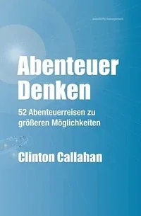
](https://forms.gle/JMnUbzhuLK1hrwiP6)
Abenteuer Denken: 52 Abenteuerreisen zu größeren Möglichkeiten
von Clinton Callahan, 2007. Übersetzt ins Deutsche von Marion Lutz. Es spielt keine Rolle, wie alt Sie sind, welchen Beruf Sie ausüben, worin Ihre bisherige Ausbildung bestand oder als was Sie sich selbst bezeichnen – die in diesem Buch enthaltenen Ideen werden Ihren Geist neu verkabeln. Mit diesem Buch laden Sie eine neue menschliche Software in Ihren Kopf herunter, die Ihnen Handlungsmöglichkeiten eröffnet, die Sie vorher nicht hatten. Wenn Sie Ihre gegenwärtige Ideenwelt mögen und sie nicht verändert wissen wollen, warnen wir Sie: Lesen Sie dieses Buch nicht. Es erwarten Sie in diesem Buch 52 Abenteuerreisen, die Sie über das Jahr verteilt unternehmen können, also jede Woche ein neues Abenteuer. Jedes beginnt mit einer Erkenntnis. Erkenntnisse sind keine Aphorismen, Plattheiten, Meinungen oder so genannte Worte der Weisheit. Erkenntnisse sind grundlegendes Wissen in seiner konzentriertesten Form. Da eine Erkenntnis dermaßen verdichtet ist, kann unser Verstand sie nicht verdauen. Stattdessen verdaut die Erkenntnis unseren Verstand. Wir können keine neuen Ergebnisse erzielen, wenn wir weiterhin so denken, wie wir es bisher getan haben. Der Umkehrschluss hingegen ist noch interessanter: Wenn wir es auf irgendeine Weise schaffen, unsere Denkweisen und Denkmuster zu verändern, werden wir automatisch damit beginnen, neue Resultate hervorzubringen. Sobald wir ein „Aha!"-Erlebnis haben, bei dem eine Erkenntnis unseren Verstand neu strukturiert, beginnen wir auf eine neue Art zu denken.
[
](http://thoughtwarepress.mystrikingly.com/)
Wahre Liebe im Alltag (ausverkauft)
von Clinton Callahan, 2007. Übersetzt ins Deutsche von Marion Lutz. Das Buch richtet sich an alle Männer und Frauen, die in einer Beziehung leben oder leben wollen. Es hilft, die eigenen Strukturen in Bezug auf Beziehungen, Sex, Zärtlichkeit, Konflikte zu erkennen – und zu ändern!
Dieses Buches befähigt Sie zu einem Leben in persönlicher Verantwortung und Konsequenz. Der Autor behauptet, dass selbst die „besten” unserer Beziehungen bloß „Gewöhnliche Menschliche Beziehungen” sind. Er unterscheidet zwei weitere Domänen, die unserer Erkundung offen stehen, und zwar Außergewöhnliche Menschliche Beziehung und Archetypische Beziehung. Das Buch zeigt genauestens auf, wie Sie diese neuen Domänen gemeinsam betreten und sich dort lange genug aufhalten können, um echte Vertrautheit, Leidenschaft und Zufriedenheit zu kultivieren. Die essentiellen Lehrwerkzeuge sind „mentale Landkarten“, welche die Dynamik sich entwickelnder Beziehungen illustrieren und formen. Daran gekoppelt ist eine Reihe von „Experimenten“, die alleine oder mit dem Partner unternommen werden können.
[
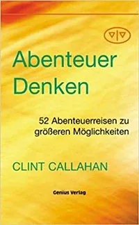
](http://nextculturepress.org/499.html?&L=9)
Abenteuer Denken: 52 Abenteuerreisen zu größeren Möglichkeiten (ausverkauft)
von Clinton Callahan, 2004. Übersetzt ins Deutsche von Marion Lutz. Es spielt keine Rolle, wie alt Sie sind, welchen Beruf Sie ausüben, worin Ihre bisherige Ausbildung bestand oder als was Sie sich selbst bezeichnen – die in diesem Buch enthaltenen Ideen werden Ihren Geist neu verkabeln. Mit diesem Buch laden Sie eine neue menschliche Software in Ihren Kopf herunter, die Ihnen Handlungsmöglichkeiten eröffnet, die Sie vorher nicht hatten. Wenn Sie Ihre gegenwärtige Ideenwelt mögen und sie nicht verändert wissen wollen, warnen wir Sie: Lesen Sie dieses Buch nicht. Es erwarten Sie in diesem Buch 52 Abenteuerreisen, die Sie über das Jahr verteilt unternehmen können, also jede Woche ein neues Abenteuer. Jedes beginnt mit einer Erkenntnis. Erkenntnisse sind keine Aphorismen, Plattheiten, Meinungen oder so genannte Worte der Weisheit. Erkenntnisse sind grundlegendes Wissen in seiner konzentriertesten Form. Da eine Erkenntnis dermaßen verdichtet ist, kann unser Verstand sie nicht verdauen. Stattdessen verdaut die Erkenntnis unseren Verstand. Wir können keine neuen Ergebnisse erzielen, wenn wir weiterhin so denken, wie wir es bisher getan haben. Der Umkehrschluss hingegen ist noch interessanter: Wenn wir es auf irgendeine Weise schaffen, unsere Denkweisen und Denkmuster zu verändern, werden wir automatisch damit beginnen, neue Resultate hervorzubringen. Sobald wir ein „Aha!"-Erlebnis haben, bei dem eine Erkenntnis unseren Verstand neu strukturiert, beginnen wir auf eine neue Art zu denken.
[
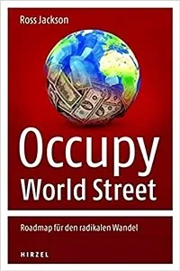
](https://elibrary.hirzel.de/book/99.105015/9783777623702)
Occupy World Street
von Ross Jackson (co-founder of the Global Ecovillage Network), Übersetzt ins Deutsche von the Possibility Management Pirate Translation Team, Spaceholder Georg Pollitt.
Unternehmer und Politiker auf der ganzen Welt lassen sich ihre Abenteuer schon lange von den Staatsbürgern finanzieren. Die Kluft zwischen Reich und Arm wird immer tiefer; Entwicklungsländer verschulden sich dramatisch und bei der Ausbeutung von Rohstoffen wird die Umwelt zerstört. Durch seine Schilderung der Lage macht Ross Jackson deutlich, dass es so nicht weitergehen kann. Als Ausweg aus der Krise stellt er hier eine Vision für umfassende Reformen der Weltwirtschaft und der politischen Strukturen vor. Einige Länder könnten als Vorreiter neue Bündnisse eingehen und neue internationale Institutionen einführen; zusammen mit Graswurzelbewegungen könnten sie den Weg für andere Staaten ebnen. Die radikale Botschaft lautet: Lösen wir uns von der alten Weltordnung und schaffen wir eine Welt selbstbestimmter, unabhängiger Staaten, in denen ökologische Nachhaltigkeit und Menschenrechte ernst genommen werden!
[
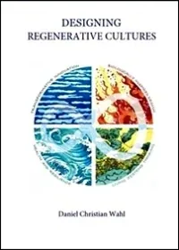
](https://bookshop.org/a/16582/9781909470774)
Designing Regenerative Cultures
Notice anything in the cover design? Yes. It is the symbol of Archiarchy, the human culture that naturally emerges after matriarchy and patriarchy have run their course. Daniel Wahl has included Possibility Management in his rewrite of the curriculum for Gaia Education's Ecovillage Design Education (EDE).
His book covers the finance system, agriculture, design, ecology, economy, sustainability, organizations and society at large.
In this remarkable book, Daniel Wahl explores ways in which we can reframe and understand the crises that we currently face, and he explores how we can live our way into the future. Moving from patterns of thinking and believing to our practice of education, design and community living, he systematically shows how we can stop chasing the mirage of certainty and control in a complex and unpredictable world. The book asks how can we collaborate in the creation of diverse regenerative cultures adapted to the unique biocultural conditions of place? How can we create conditions conducive to life? "This book is a valuable contribution to the important discussion of the worldview and value system we need to redesign our businesses, economies, and technologies - in fact, our entire culture - so as to make them regenerative rather than destructive." --Fritjof Capra, author of The Web of Life, co-author of The Systems View of Life: A Unifying Vision.
[
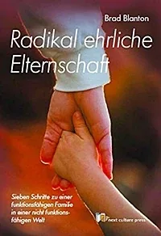
](http://nextculturepress.org/501.html?&L=0)
Radikal erliche Eltenschaft
von Brad Blanton. Übersetzt ins Deutsche von Marion Lutz.
Unverblümt räumt Brad Blanton mit der moralistischen und glaubensverhafteten Denkweise auf und geht direkt zur Wurzel allen Leids. Es ist ein Buch zur Kindererziehung, aber wie können wir Kinder erziehen, wenn wir als Eltern nicht zuerst aus dieser Denkweise aussteigen, nicht zuerst uns selbst genauer unter die Lupe nehmen? Wollen wir weiterhin Tipps austauschen und Symptomerleichterung anstreben? Brad nimmt kein Blatt vor den Mund, spricht die Dinge direkt an.